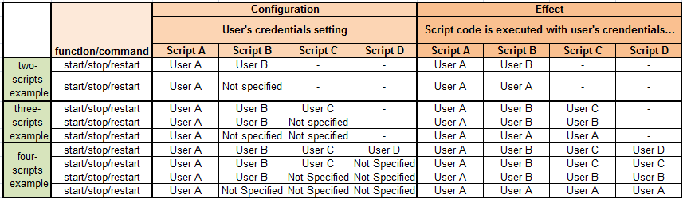
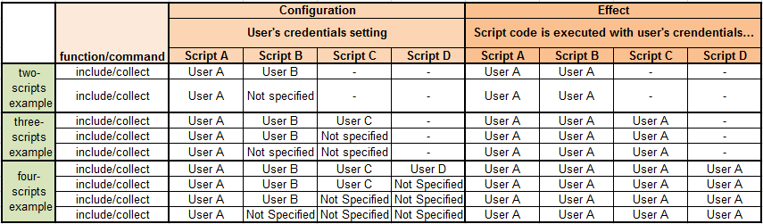
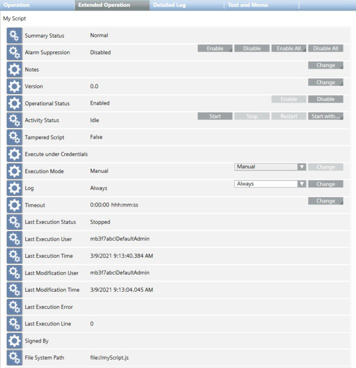

Execution of Scripts
The Desigo CC scripts available for execution are those located under Applications > Logics > Scripts. Scripts can be added here by either writing them in Script Editor, or by importing them into the project from a file or library. Scripts may also be added here automatically when certain extensions are installed.
A script can be executed if its Operational Status in the Operation tab is Enabled, and provided it is not already running (Activity Status is Idle).
Scripts can be executed in the following ways:
- Manually by the operator, from the Operation tab.
- From within Script Editor while writing a script.
- Invoked by an automated function such as a macro or reaction.
- Automatically on Desigo CC project startup.
During execution, a script traces error messages and information messages which can be viewed in the Trace Viewer and in the Console expander of the Script Editor.
For related procedures, see Executing Scripts.

In case of multiple sequential execution requests (for example, when multiple alarms occur at the same time and the script is triggered by those alarms), the Script Manager will enqueue the requests that will be processed and executed sequentially.
Tamper Protection of Scripts
In the file system, the .js files of the scripts available for execution are stored under the folder [Installation Drive]:\[Installation Folder]\[Project Name]\scripting\. To find the .JS file of any individual script, select it in System Browser and check the File System Path property in the Extended Operation tab.
To protect these scripts against tampering, a hash value is computed at the time when they are added to Application View. If the script file is subsequently modified on disk (for example, using an external editor), when you try to execute the script it will fail with the Last Execution Status = Tampered. And a Script is tampered event is generated in Event List.
If you are sure the modifications to the script are legitimate, you can remove the tamper warning by saving the script again from Script Editor.

Malicious script injection
To prevent any security threats that may occur because of malicious script injection, any script that is not configured or edited using the Desigo CC script editor application is considered invalid and its execution fails with the following error:
The script has been tampered.
If you are sure that a script is not harmful to Desigo CC, you can save it in the Script Editor tab so that it is enabled in configuration and no longer considered a security threat.
Script Execution Credentials
By default, scripts are executed with the credentials of the logged-on user. However, you can configure a script so that it runs with different credentials (for example, root credentials with full access to all the system objects or using a low-privileged user for limiting the script visibility on selected system objects). For instructions, see Set the Execution Credentials for a Script.
When you specify the user credentials for a script, those credentials are stored in the Execute under Credentials property of the script, so they do not need to be entered when the script is executed or invoked.
Credentials for Scripts Invoked by Reactions
For scripts invoked by automations such as reactions, it is not mandatory to set execution credentials. Such scripts will be executed with root credentials.
Credentials when Scripts Invoke Other Scripts
In case of scripts that start, stop, and restart other scripts and are executed with user’s credentials, the invoked scripts are executed with their own credentials only if specifically set. See the following table for reference.

In case of scripts that include or collect other scripts and are executed with user’s credentials, the invoked scripts are executed with the credentials of the invoking script, regardless of the user’s credentials specific settings. See the following table for reference.

Properties and Commands of a Script
When you select a script object in System Browser, its properties and commands display in the Extended Operation tab.

Property | Description | Commands |
Notes | Enter your comments/remarks for the current script. |
|
Version | By default, a script is not automatically versioned (default value is 0.0). To track changes and later look at the different versions of the same script, you may want to mark it with a version (major.minor). If you save a script as a new one (Save As If you export the script (Export |
|
Operational Status | Indicates whether the script is enabled (meaning it is available to be run):
|
For instructions, see Enable or Disable Scripts. |
Activity Status | Indicates whether the script is currently running, not running, or cancelling:
|
For instructions, see Manually Execute or Stop Scripts.
For instructions, see Start a Script with Parameters. |
Tampered Script | Indicates whether the script is tampered ( | - |
Execute under Credentials | If the script is set to execute under specific user credentials, indicates the username. If the field is blank, the script executes with the credentials of the logged on user. | - |
Execution Mode | By default, is set to Manual, which means the script can be started by the operator from the Operation tab, or also invoked by, for example, a reaction or macro. Automatic instead means the script will start automatically at project startup. To do this you must also set the execution credentials for running the script. |
|
Log | Indicates whether the history logging for the script is active:
|
|
Timeout | By default, this property is set to 0 which means that a script will execute until it ends, or until the operator stops it. To guard against scripts that fail to end, you may want to set a maximum execution time allowed for a script. When that time elapses, the script will be automatically stopped (In the Operation tab: Activity Status = |
|
Last Execution Status | Indicates the outcome the last time the script was run:
| - |
Last Execution User | Name of the workstation\user who last executed the script. | - |
Last Execution Time | Date and time when the script was last executed. | - |
Last Modification User | Name of the user who last modified the script. | - |
Last Modification Time | Date and time when the script was last modified. | - |
Last Execution Error | Last error that occurred when the script was last executed. The error message is in English language as provided by the Jint engine. No message displaysif the script was executed without errors. This information can be useful when debugging scripts. Some example of errors:
| - |
Last Execution Line | Last line of code that was executed with error. 0 means that the script was executed without errors. This information can be useful when debugging scripts. | - |
Signed by | Block of encoded text that includes the certificate request identification fields (Distinguished Name (DN) fields), such as, Common Name, Organization, Organization Unit, Locality, and so on. | - |
File System Path | Script location folder. | - |
 ) it will have same version as the source script.
) it will have same version as the source script. ) the version data is exported in the script metadata, so that, when the same file is imported, it will have the same version.
) the version data is exported in the script metadata, so that, when the same file is imported, it will have the same version.
Scripts Folder Control Commands1) | |
Command | Description |
Start All | Start all the scripts contained in the scripts folder currently selected. |
Stop All | End the execution of all the scripts contained in the scripts folder currently selected. |
Restart All | Stop and restart the execution of all the scripts contained in the scripts folder currently selected. |
1) | The commands are always available, regardless of the current status of the scripts, while the issued command is recursive on all the subfolders and their scripts. |